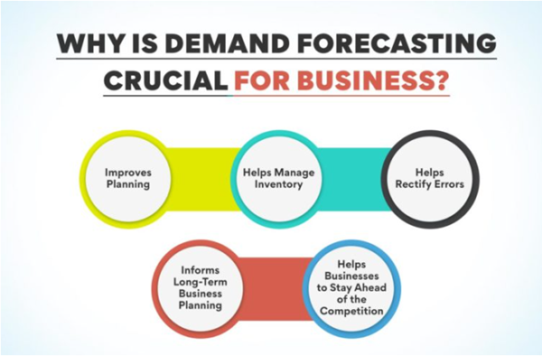
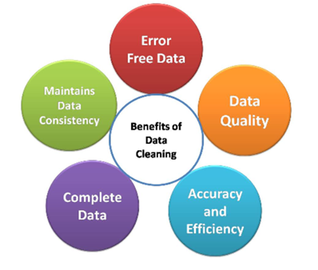
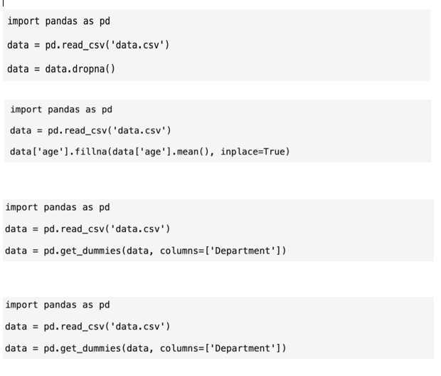

Leveraging Supervised Learning for Demand Forecasting in Retail
Introduction
The landscape of the retail sector is constantly evolving. Within the industry, a persistent challenge revolves around efforts to enhance demand forecasting. Demand forecasting is the process of leveraging tools to estimate the future demand for products. The goal of demand forecasting is to help businesses make data-driven decisions for their business strategy, particularly with inventory management and production planning. The complexities of understanding and identifying customer preferences and seamlessly delivering personalised interactions pose a challenging task for retailers. Finding the right balance is difficult to achieve, as traditional methods can hinder their efforts to understand the evolution of consumer behaviour, particularly as the world becomes more digital. The emergence of machine learning has been a pivotal force in how businesses manage their inventory levels and enhance their customer journeys seamlessly through various channels. This report will analyse the applications of machine learning and how it contributes to improving efficiency and solving problems faced by businesses in the retail sector with specific focus how it helps to improve demand forecasting.
Throughout the report, we will build a case around how supervised machine learning can help businesses with demand forecasting. Firstly, we will present relevant data cleaning and feature engineering methods, and their relevance will be justified. From these methods, we can recommend what tools and software should be used by the retail sector to optimise demand forecasting. The Random Forest algorithm will be presented and put into context for retailers, with the advantages and limitations being outlined. Our results will be analysed, bringing us to our conclusion with our findings and propose actionable recommendations.
Data Cleaning and Feature Engineering Methods
Retailers will have large quantities of data that can be complex to analyse. There are values within a dataset that can be considered dirty. These can be missing values, typos, or duplicates (Chu et al, 2016). Cleaning this data is vital to improving the raw quality and accuracy of the data. Scalability is another challenge to manage. As datasets grow, data cleaning becomes trickier, and different methods must be used. Big data can now be implemented at low costs to collect data from different platforms such as social media, e-commerce sites, applications etc (Ren et al, 2019).
There are several methods for cleaning data. Removing missing values and outliers are necessary to improve data quality and accuracy. Duplicated data can distort the data and have a biased outcome. Outlier removal can be handled by using standardisation of data through z-score analysis. This requires important values such as mean and standard deviation. These are to keep data values within a reasonable range, which helps to improve the accuracy of customer related models and can then be utilised for predictive analytics. Standardising customer information to ensure all data entries are consistent. The information can be personal information like name, email, phone number, address, etc. This enables more presentable data, which is an easy task to do as some variables in the data can have dependencies and pairings (Winkler, 2003).
Different methods can be used to eliminate features, whether they are redundant or simply irrelevant (Khalid et al, 2014). Creating new columns in a dataset that represent past sales targets can be used to identify trends in demand. These are called lag features. A lag feature for sales in the past week can be useful in finding patterns of recent sales patterns. Smoothing out datasets is crucial. Rolling statistics can help with this. This involves calculation values such as standard deviation, mean and median over a rolling period. This can help identify seasonal trends with sales. The rolling mean of a monthly period helps smooth over fluctuations, for example.
CHOSEN MODEL-RANDOM FORESTS
The model we chose in relation to demand forecasting in the retail sector is Random Forest. Random forests were initially proposed by Leo Breiman in the 2000’s (Biau, 2012). It’s a regression tree technique that's made up of a series of tree classifiers, where each tree will output a result/prediction. These results are then combined to get a final sort result. (Liu, Wang & Zhang, 2012). Bootstrap aggregation and randomization of predictors are used to achieve predictive accuracy (Rigatti, 2017 & Biau, 2012). There are generalised advantages to the Random Forest model, and some have even said that it’s one of the “most accurate” models available (Biau, 2012). Random Forest models boast high classification accuracy and have shown to tolerate outliers extremely well (Liu, Wang & Zhang, 2012), making them useful in the retail sector.
We specifically looked at how they can be used in the retail sector, regarding demand forecasting. There is a need for demand forecasting in the retail sector, for a variety of reasons, including forecasting demand for new products and inventory control. Ideally a company will be able to develop a forecasting model that will help decision making within the company, in the areas of “procurement, production, distribution and sales.” (Mitra et. al, 2022). There has been multiple studies conducted, where Random Forest has been used in demand forecasting within the retail industry, to achieve the above. A study by Vairagade et. al (2019), tried to predict demand by customers in supply-chain management, which is a large problem of the retail sector, as stock must be kept flowing adequately to increase customer satisfaction. They used a variety of demand forecasting models, and it became clear that Random Forest produced the best results, for this specific issue. (Vairagade et. al, 2019).
Another similar study, by Andaur et. al (2021), implemented forecasting models and machine learning to predict when grocery items would become out of stock (OOS). Being able to predict this, can potentially avoid customer dissatisfaction that can occur when their vital products aren’t available. The study implemented two different systems, with one of them being Random Forest. The systems were tested in a retail packaged food manufacturer company and concluded that the Random Forest model produced the best results in the real-world setting (Andaur et. al, 2021). Lastly, Random Forest was used in conjunction with K-Means and Quantile Regression Forest, to combine the historical sales data of previously introduced products and product characteristics of existing and new products in real- world data sets for a variety of companies. This information was then used to make prelaunch forecasts and support inventory management decisions for new products (Van Steenbergen and Mes, 2020).
Visualization of Random Forest
Random forest is a group of decision trees that work together to make better predictions. Every tree in the forest is trained using a random feature set and a random subset of the data. In this visual, you can see the difference between a single decision tree and the random forest model. It is clearly portrayed here that the random forest model is essentially a combination of multiple decision trees that work together to make more accurate and reliable predictions.
Below we can see how each branch works separately and their most definitive answer is contributed towards the result.
Limitations
Using the visuals, we can evaluate how the random forest model operates but with this model, there are some limitations that can be associated. The first limitation is overfitting, this is when the results of the model look good in sample, but they perform poorly on out- of- sample data. This happens when a model becomes overly familiarised at learning the training set, identifying noise or erratic fluctuations in the set instead of the underlying patterns. Random forest is less prone to overfitting, but it is still a massive limitation to the model when it does occur. One way that overfitting can occur is if there are too many decision trees in the model. Each tree in isolation is a weak learner, when you combine them altogether this can lead to a high-capacity model. The model may nevertheless overfit the training data if the forest has an excessively high tree population or if the trees are allowed to grow too deeply during training. Overfitting is also a limitation of machine learning. This is where they perform well on training data but cannot execute upon new, unseen data. One of its common challenges is to balance the model's complexity.
Larger datasets will not only cause overfitting when the model has run, but before random forest models can be very expensive to establish and develop. Training this type of model can be very technologically intensive, meaning there are various types of hardware, software and cloud-based platforms needed for its successful operations. Once the foundation for the model is established, the data that is going to be entered must be learned and prepared. This is a very time-consuming task that entails many different elements that all must be correct for the data to be processed fittingly. Along with the expenses associated with establishing the random forest model, the amount of time consumed when developing the model is a drawback too. You must train multiple decision trees and for a large dataset, this will be a very tedious and time-consuming task (Oludare, 2020).
The dataset that will be implemented into this type of model must be very precise and exact. For the machine learning to partake, there cannot be any data gaps. This is a major limitation to machine learning as if there are gaps in the data, the results for these with skew and it lowers the accuracy for these models (Priyobroto, 2022).
Useful Tools for Random Forests and How This Helps Retailers
Demand forecasting is a critical aspect of retail operations, and leveraging supervised learning, particularly through techniques like the Random Forest model, can significantly enhance accuracy. In this section, we delve into the suggested tools and software essential for implementing and sustaining this process. The robust ecosystem of Python that features powerhouse libraries like Scikit-learn and Pandas, proves instrumental in the realm of retail demand forecasting (Pedregosa et al., 2011). In particular, the Pandas library streamlines data processing making it more efficient and guarantees a smooth integration with machine learning models (Subasi, 2020). Using Python scripts in Jupyter Notebook, retailers can efficiently manage a range of datasets, resolve outliers, and fill in missing variables which are critical for maintaining model accuracy. Jupyter Notebooks make it possible to apply the Random Forest model step-by-step. To help with model interpretation, interactive dashboards and visualisations can be integrated right into the notebook. Python's versatility and effectiveness establish it as a key component for retailers utilising the powerful features of the Random Forest model, enabling accurate demand forecasting and improving decision-making in the ever-changing retail environment.
Elasticsearch has emerged as a pivotal tool for refining demand forecasting models, particularly when employing the advanced capabilities of the random forest algorithm. Elasticsearch, a popular open-source analytics and search engine, significantly improves the effectiveness of product searches (Andhavarapu, 2017). The ability to quickly process extensive datasets empowers retailers to extract actionable insights for effective demand forecasting. By incorporating Elasticsearch with the random forest model, retailers can leverage its capability to provide rapid and precise product search results. It enhances accuracy of demand forecasts, enabling retailers to promptly adapt to emerging market trends. This positions them with a competitive advantage in the ever-changing retail landscape. Clustering algorithms, coupled with advanced conversational AI tools like Dialogflow and chatbots play a pivotal role helping retailers forecast demand. Retailers can obtain deeper insights into customer behaviours, preferences, and market trends. They are excellent at finding complex patterns and relationships inside large datasets. By leveraging clustering algorithms, retailers can segment their customer base more effectively, tailoring their random forest models to distinct consumer groups with specific purchasing patterns. Dialogflow is a framework for natural language processing that improves customer-chatbot interactions, making feedback and data collecting easier (Sabharwal, 2020). Retailers can now obtain real-time data on customer preferences and feelings by integrating chatbots, which enriches the input data used in the random forest model (Huang et al., 2021). Consequently, retailers gain the capability to make well-informed decisions regarding inventory management, pricing strategies, and marketing initiatives.
OUR FINDINGS/INTERPRETATION OF WHY RANDOM FORESTS ARE EFFECTIVE
Demand for retail products is often influenced by non-linear relationships among various factors such as seasonality, promotions, and consumer behaviour. Random Forests excel at capturing these non-linearities, providing a more accurate representation of the intricate patterns in demand data. Retail datasets can be noisy, with fluctuations caused by external factors or irregular events. Random Forests are robust to noisy data, as they rely on the consensus of multiple decision trees. This robustness helps prevent the model from being overly influenced by outliers or short-term anomalies, leading to more reliable demand forecasts. Retail demand forecasting often involves dealing with a large number of features, including historical sales, promotional activities, inventory levels, and external economic factors. Random Forests can effectively handle a diverse set of features, accommodating both numerical and categorical variables without the need for extensive in-depth feature engineering. Seasonal fluctuations are a common aspect of retail demand, with changes tied to holidays, weather patterns, or cultural events. Random Forests can automatically identify and adapt to seasonal variations in the data, making them well-suited for capturing and predicting demand patterns that repeat over time. Understanding the key drivers of demand is crucial for retailers. Random Forests provide a feature importance ranking, indicating the contribution of each variable to the model's predictions. This insight enables retailers to prioritise and focus on the most influential factors, optimising inventory management and marketing strategies accordingly.
The ensemble nature of Random Forests, aggregating predictions from multiple decision trees, contributes to higher prediction accuracy. This is particularly valuable in demand forecasting where accuracy is essential for optimizing inventory levels, preventing stockouts, and minimizing excess inventory costs. Retail demand patterns can change dynamically due to market trends, consumer preferences, or external events. Random Forests can adapt to these changes over time, making them suitable for forecasting in dynamic retail environments. Their ability to continuously learn from new data allows retailers to stay responsive to evolving market conditions. Striking a balance between bias and variance is crucial in demand forecasting. Random Forests inherently manage this trade-off by constructing diverse decision trees. This helps prevent overfitting (low bias, high variance) and underfitting (high bias, low variance), resulting in a model that generalizes well to new and unseen demand patterns.
CONCLUSION
- Retailers should consider integrating Random Forests into their demand forecasting operations, leveraging the model's adaptability and accuracy for optimizing inventory management and meeting customer demand effectively.
- Recognise the dynamic nature of retail, regular monitoring and adaptation of Random Forest models to evolving demand patterns are essential. This ensures that the model remains relevant and effective in the face of changing market conditions.
- Collaboration between data scientists and domain experts in retail is vital as well as combining technical expertise with industry insights can enhance the interpretability of the model's results and foster a deeper understanding of retail-specific nuances.
SUGGESTIONS FOR FUTURE RESEARCH
- Develop techniques to enhance the interpretability of ensemble models, addressing the challenge of explaining complex predictions to stakeholders. This can improve the trust and adoption of Random Forests in retail decision-making.
- Investigate methods to dynamically update feature importance rankings as demand patterns evolve. This could provide real-time insights into the changing drivers of demand, enabling proactive decision-making.
- Explore the integration of Random Forests with emerging technologies such as reinforcement learning and deep learning to further enhance forecasting capabilities, especially in scenarios with high-dimensional and complex data.